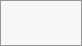

Using federation shares
Federation Sharing allows you to mount file shares from remote servers, in effect creating your own cloud of Nextclouds. You can create direct share links with users on other servers.
Creating a new federation share
Federation sharing is enabled on new or upgraded installations by default. Follow these steps to create a new share with other or another file service 9+ servers:
Go to your Files page and click the Share icon on the file or directory you want to share. In the sidebar enter the username and URL of the remote user in this form: <username>@<oc-server-url>. The form automatically confirms the address that you type and labels it as "remote". Click on the label.

When your local server makes a successful connection with the remote server you will see a confirmation. Your only share option is Can edit.
Click the Share button anytime to see who you have shared your file with. Remove your linked share anytime by clicking the trash can icon. This only unlinks the share, and does not delete any files.
Creating a new federated cloud share via email
Use this method when you are sharing with users on another file service 8.x and older. Configure the remaining options as appropriate for your situation.
If you do not know the username or URL, you can have create the link for you and email it to your recipient.

When your recipient receives your email they will have to take a number of steps to complete the share link. First they must open the link you sent them in a web browser, and then click the Add to your Acme Hub button.
The Add to your Acme Hub button changes to a form field, and your recipient needs to enter the URL of their or another file service server in this field and press the return key, or click the arrow.
Next, they will see a dialog asking to confirm. All they have to do is click the Add remote share button and they're finished.
Remove your linked share anytime by clicking the trash can icon. This only unlinks the share, and does not delete any files.